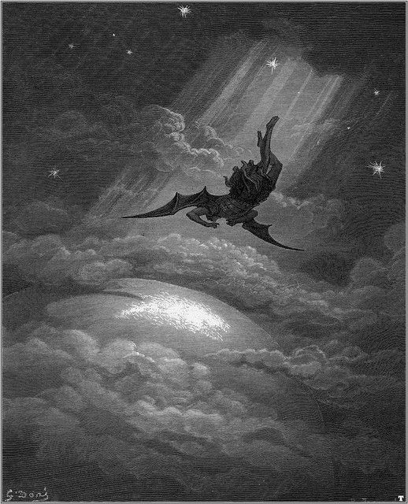
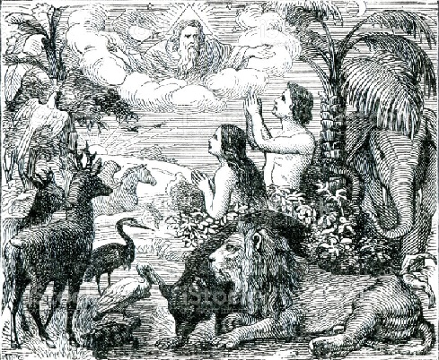
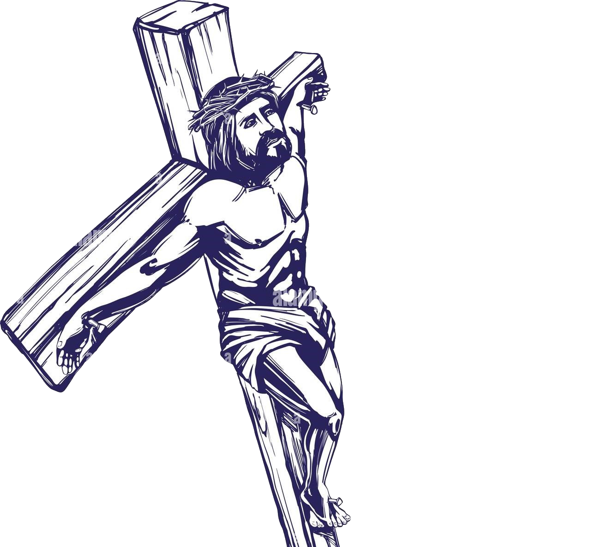
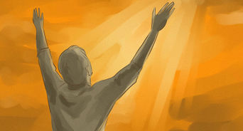
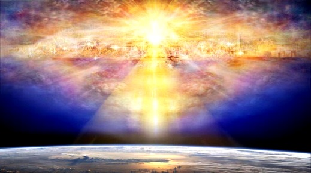

NHỮNG BƯỚC ĐẦU THEO CHÚA JESUS CHRIST
Chương trình ĐỨC CHÚA TRỜI cho loài người

Sáng thế kí 1:26-28
ĐỨC CHÚA TRỜI phán rằng: Chúng ta hãy làm nên loài người như hình ta va theo tượng ta, đặng quản trị loài cá biển, loài chim trời, loài súc vật, loài côn trùng bò trên mặt đất, và khắp cả đất. ĐỨC CHÚA TRỜI dựng nên loài người như hình NGÀI; NGÀI dựng nên loài người như hình ĐỨC CHÚA TRỜI; NGÀI dựng nên người nam cùng người nữ. ĐỨC CHÚA TRỜI ban phước cho loài người và phán rằng: Hãy sanh sản thêm nhiều và làm đầy dẫy đất, hãy làm cho đất phục tùng; hãy quản trị loài cá biển, loài chim trời cùng các vật sống hành động trên mặt đất.
ĐỨC CHÚA TRỜI phán rằng: Chúng ta hãy làm nên loài người như hình ta va theo tượng ta, đặng quản trị loài cá biển, loài chim trời, loài súc vật, loài côn trùng bò trên mặt đất, và khắp cả đất. ĐỨC CHÚA TRỜI dựng nên loài người như hình NGÀI; NGÀI dựng nên loài người như hình ĐỨC CHÚA TRỜI; NGÀI dựng nên người nam cùng người nữ. ĐỨC CHÚA TRỜI ban phước cho loài người và phán rằng: Hãy sanh sản thêm nhiều và làm đầy dẫy đất, hãy làm cho đất phục tùng; hãy quản trị loài cá biển, loài chim trời cùng các vật sống hành động trên mặt đất.
Từ ban đầu mục đích của ĐỨC CHÚA TRỜI tạo dựng nên loài người để trở nên giống hình tượng của NGÀI và được NGÀI trao quyền cai trị mọi vật hành động trên đất ĐỨC CHÚA TRỜI tạo nên
ĐỨC CHÚA TRỜI đặt để con người làm Ông Trời con dưới đất này. Nhưng tiếc thay loài người đã phạm tội đánh mất sự nhìn biết mục đích ĐỨC CHÚA TRỜI tạo dựng nên mình.
ĐỨC CHÚA TRỜI đặt để con người làm Ông Trời con dưới đất này. Nhưng tiếc thay loài người đã phạm tội đánh mất sự nhìn biết mục đích ĐỨC CHÚA TRỜI tạo dựng nên mình.
Tội lỗi

Hỡi sao mai, con trai của sáng sớm kia, sao ngươi từ trời sa xuống! Hỡi kẻ giày-đạp các nước kia, ngươi bị chặt xuống đất là thể nào! 13Ngươi vẫn bụng bảo dạ rằng: Ta sẽ lên trời, sẽ nhắc ngai ta lên trên các ngôi sao Đức Chúa Trời. Ta sẽ ngồi trên núi hội về cuối-cùng phương bắc. 14Ta sẽ lên trên cao những đám mây, làm ra mình bằng Đấng Rất-Cao. 15Nhưng ngươi phải xuống nơi Âm-phủ, sa vào nơi vực thẳm!
Kẻ phạm tội đầu tiên là Sa-tan và bị ĐỨC CHÚA TRỜI hình phạt quẳng khỏi Thiên Đàng và Hồ Lửa là nơi ĐỨC CHÚA TRỜI tạo ra để dành cho nó.

Sáng thế ký 3:1-19
14 Giê-hô-va Đức Chúa Trời bèn phán cùng rắn rằng: Vì mầy đã làm điều như vậy, mầy sẽ bị rủa sả trong vòng các loài súc vật, các loài thú đồng, mầy sẽ bò bằng bụng và ăn bụi đất trọn cả đời. 15 Ta sẽ làm cho mầy cùng người nữ, dòng dõi mầy cùng dòng dõi người nữ nghịch thù nhau. Người sẽ giày đạp đầu mầy, còn mầy sẽ cắn gót chân người. 16 Ngài phán cùng người nữ rằng: Ta sẽ thêm điều cực khổ bội phần trong cơn thai nghén; ngươi sẽ chịu đau đớn mỗi khi sanh con; sự dục vọng ngươi phải xu hướng về chồng, và chồng sẽ cai trị ngươi. 17 Ngài lại phán cùng A-đam rằng: Vì ngươi nghe theo lời vợ mà ăn trái cây ta đã dặn không nên ăn, vậy, đất sẽ bị rủa sả vì ngươi; trọn đời ngươi phải chịu khó nhọc mới có vật đất sanh ra mà ăn. 18 Đất sẽ sanh chông gai và cây tật lê, và ngươi sẽ ăn rau của đồng ruộng; 19 ngươi sẽ làm đổ mồ hôi trán mới có mà ăn, cho đến ngày nào ngươi trở về đất, là nơi mà có ngươi ra; vì ngươi là bụi, ngươi sẽ trở về bụi.
14 Giê-hô-va Đức Chúa Trời bèn phán cùng rắn rằng: Vì mầy đã làm điều như vậy, mầy sẽ bị rủa sả trong vòng các loài súc vật, các loài thú đồng, mầy sẽ bò bằng bụng và ăn bụi đất trọn cả đời. 15 Ta sẽ làm cho mầy cùng người nữ, dòng dõi mầy cùng dòng dõi người nữ nghịch thù nhau. Người sẽ giày đạp đầu mầy, còn mầy sẽ cắn gót chân người. 16 Ngài phán cùng người nữ rằng: Ta sẽ thêm điều cực khổ bội phần trong cơn thai nghén; ngươi sẽ chịu đau đớn mỗi khi sanh con; sự dục vọng ngươi phải xu hướng về chồng, và chồng sẽ cai trị ngươi. 17 Ngài lại phán cùng A-đam rằng: Vì ngươi nghe theo lời vợ mà ăn trái cây ta đã dặn không nên ăn, vậy, đất sẽ bị rủa sả vì ngươi; trọn đời ngươi phải chịu khó nhọc mới có vật đất sanh ra mà ăn. 18 Đất sẽ sanh chông gai và cây tật lê, và ngươi sẽ ăn rau của đồng ruộng; 19 ngươi sẽ làm đổ mồ hôi trán mới có mà ăn, cho đến ngày nào ngươi trở về đất, là nơi mà có ngươi ra; vì ngươi là bụi, ngươi sẽ trở về bụi.
Adam và Ê-va tổ tiên loài người nghe theo sự cám dỗ của sa-tan mà vi phạm Lời phán của CHÚA vì vậy họ đã bị rủa sã. Nên tất cả loài người sinh ra từ hai người đều bị rủa sả.
Sự đền tội chỉ có thể chuộc bởi huyết công bình của ai đó.
Sự đền tội chỉ có thể chuộc bởi huyết công bình của ai đó.
Sự cứu rỗi
Vì ĐỨC CHÚA TRỜI yêu thương thế gian đến nỗi đã ban con một của NGÀI, hầu cho hễ ai tin con ấy không bị hư mất mà được sự sống đời đời

ĐỨC CHÚA TRỜI có một kế hoạch tuyệt vời cho sự sa ngã của loài người.
Qua sự chết và sự sống lại của CHÚA JESUS CHRIST là ĐỨC CHÚA TRỜI mang hình
hài của loài người. NGÀI chứng tỏ cho cả cõi sáng tạo của NGÀI rằng luật pháp NGÀi
là công bình cho tất cả mọi người dù là chính NGÀI. NGÀI đã gánh lấy tội lỗi cho toàn
nhân loại và nhận lấy sự chết trong sự công bình luật pháp của NGÀI. Sự chết đã không cầm quyền được trên NGÀI sau 3 ngày, NGÀI đã sống lại.
Giờ đây bất cứ ai tin nhận NGÀI đều được huyết CHÚA chuộc tội mình và được NGÀI ban cho sự sống lại đời đời như NGÀI.
Giờ đây bất cứ ai tin nhận NGÀI đều được huyết CHÚA chuộc tội mình và được NGÀI ban cho sự sống lại đời đời như NGÀI.
Cầu nguyện
Cầu nguyện là chuyển giao ý muốn của ĐỨC CHÚA TRỜI xuống đất này. Loài người bắt đầu cầu nguyện
từ đời cháu của A-dam là Ê-nót.
Sáng thế kí 4:26
Sết cũng sanh được một con trai, đặt tên là Ê-nót. Từ đây, người ta bắt đầu cầu khẩn danh ĐỨC GIÊ HÔ VA.

Mờ đầu lời cầu nguyện của CHÚA cho các môn đồ
Ma-thi-ơ 6:9
Vậy, các con hãy cầu nguyện như thế nầy: ‘Lạy Cha chúng con ở trên trời; Danh Cha được tôn thánh; Vương quốc Cha được đến, Ý Cha được nên, ở đất như ở trời!
Sết cũng sanh được một con trai, đặt tên là Ê-nót. Từ đây, người ta bắt đầu cầu khẩn danh ĐỨC GIÊ HÔ VA.
Cầu nguyện không phải là câu thần chú để cầu xin ĐỨC CHÚA TRỜI ban cho chúng ta điều gì đó theo ý riêng của mình. Cầu nguyện là hơi thở thuộc linh để khiến cho người tâm linh bên trong chúng ta được trưởng thành, cầu nguyện là một trong những cách thức để tương giao với ĐỨC CHÚA TRỜI. Khi cầu nguyện chúng ta bắt đầu mở ra một kênh để chuyển giao thông tin từ TRỜI xuống đất. Chúng ta nhận lấy ý muốn của ĐỨC CHÚA TRỜI và đem ý muốn đó thực hiện trên đất này.
Việc thường xuyên cầu nguyện bày tỏ một Cơ Đốc nhân biết đầu phục hoàn toàn vào CHÚA
.Khi cầu nguyện hãy chờ đợi và lắng nghe tiếng phán của CHÚA.
Ma-thi-ơ 6:9
Vậy, các con hãy cầu nguyện như thế nầy: ‘Lạy Cha chúng con ở trên trời; Danh Cha được tôn thánh; Vương quốc Cha được đến, Ý Cha được nên, ở đất như ở trời!
Đức tin
Rô ma 10:17
Như vậy, đức-tin đến bởi sự người ta nghe, mà người ta nghe, là khi lời của Đấng Christ được rao-giảng
Rô ma 10:17
Vả, đức-tin là sự biết chắc vững-vàng của những điều mình đương trông mong, là bằng-cớ của những điều mình chẳng xem thấy
Gia-cơ 2:26
Vả, xác chẳng có hồn thì chết, đức-tin không có việc làm cũng chết như vậy.
Như vậy, đức-tin đến bởi sự người ta nghe, mà người ta nghe, là khi lời của Đấng Christ được rao-giảng
Rô ma 10:17
Vả, đức-tin là sự biết chắc vững-vàng của những điều mình đương trông mong, là bằng-cớ của những điều mình chẳng xem thấy
Gia-cơ 2:26
Vả, xác chẳng có hồn thì chết, đức-tin không có việc làm cũng chết như vậy.
Đức tin đến từ ĐỨC CHÚA TRỜI chứ không phải đến từ
mong muốn riêng hay tưởng tượng của chúng ta.
Đức tin là những điều mà chúng ta chưa xem thấy
nhưng biết chắc vững vàng đó là điều đã có và
chúng ta phải hành động, thực hiện để ngày càng gần đến điều đó.
Còn nếu không hành động thì Kinh Thánh nói rõ nó không mang lại
một chút lợi ích gì cho chúng ta.
Vậy đức tin là thực hiện điều ĐỨC CHÚA TRỜI đang trông mong trong mình và qua mình.
Vậy đức tin là thực hiện điều ĐỨC CHÚA TRỜI đang trông mong trong mình và qua mình.
Kinh Thánh
Kinh Thánh: Kinh Thánh là cuốn sách được
viết 1600 năm bởi những người được ĐỨC CHÚA
TRỜI chọn lựa để viết ra những lời được bày tỏ bởi ĐỨC THÁNH LINH.
Vậy nên tác giả của Kinh Thánh là ĐỨC CHÚA TRỜI và những người viết ra gọi
là trước giả (người viết sách). Những trước giả gồm những người khác nhau
về thời gian, niên đại, nghề nghiệp nhưng vì bởi đồng một tác giả nên tất
cả đều kết nối chặt chẽ với nhau.
Kinh Thánh được ĐỨC CHÚA TRỜI viết cho loài người nói chung và đặc biệt
cho mỗi cá nhân nói riêng dù bạn là bất cứ ai không quan trọng. Kinh thánh
được ĐỨC CHÚA TRỜI viết cho bạn, bạn không thể tự hiểu Kinh Thánh nếu
không được TÁC GIẢ
Kinh Thánh bày tỏ.
Kinh Thánh trả lời tất cả các câu trả lời quan trọng cho con người. Bạn là ai? Bạn sinh ra đời này để làm gì? Điều gì là quan trọng và ý nghĩa trong đời sống bạn? Sau khi chết bạn sẽ đi về đâu?
Kinh Thánh viết về khởi đầu và kết thúc thế giới mà chúng ta đang sống, viết về sự dẫn dắt, dạy dỗ, hình phạt, cứu rỗi của ĐỨC CHÚA TRỜI cho những người được chọn. Bản chất của sự chết và sự sống đời đời, các nguyên tắc thuộc linh. Kinh Thánh là một trong sự thể hiện vật lí của ĐỨC CHÚA TRỜI cho những ai muốn nhìn chứng cứ NGÀI có thật bằng mắt thường. Lời trong Kinh Thánh là đủ để chỉ dẫn chúng ta nhận biết ĐỨC CHÚA TRỜI, có mối tương giao sống động với NGÀI.
Kinh Thánh trả lời tất cả các câu trả lời quan trọng cho con người. Bạn là ai? Bạn sinh ra đời này để làm gì? Điều gì là quan trọng và ý nghĩa trong đời sống bạn? Sau khi chết bạn sẽ đi về đâu?
Kinh Thánh viết về khởi đầu và kết thúc thế giới mà chúng ta đang sống, viết về sự dẫn dắt, dạy dỗ, hình phạt, cứu rỗi của ĐỨC CHÚA TRỜI cho những người được chọn. Bản chất của sự chết và sự sống đời đời, các nguyên tắc thuộc linh. Kinh Thánh là một trong sự thể hiện vật lí của ĐỨC CHÚA TRỜI cho những ai muốn nhìn chứng cứ NGÀI có thật bằng mắt thường. Lời trong Kinh Thánh là đủ để chỉ dẫn chúng ta nhận biết ĐỨC CHÚA TRỜI, có mối tương giao sống động với NGÀI.
ĐỨC THÁNH LINH
ĐỨC THÁNH LINH là ĐẤNG đã giáng xuống trong ngày lễ ngũ tuần và hiện tại NGÀI đang
ở trên đất này để làm chứng về CHÚA JESUS CHRIST và cáo trách thế gian này tội lội
và ban ân điển để con người ăn năn tan vỡ tin nhận vào CHÚA JESUS là CHÚA và ĐẤNG cứu chuộc
của cuộc đời mình.

Công vụ 1:8
Nhưng khi Đức Thánh-Linh giáng trên các ngươi, thì các ngươi sẽ nhận lấy quyền-phép, và làm chứng về ta tại thành Giê-ru-sa-lem, cả xứ Giu-đê, xứ Sa-ma-ri, cho đến cùng trái đất
Nhưng khi Đức Thánh-Linh giáng trên các ngươi, thì các ngươi sẽ nhận lấy quyền-phép, và làm chứng về ta tại thành Giê-ru-sa-lem, cả xứ Giu-đê, xứ Sa-ma-ri, cho đến cùng trái đất
ĐỨC THÁNH LINH là ĐẤNG sinh lại chúng ta trong Nước TRỜI thành con người mới.
Nhờ vào CHÚA THÁNH LINH mà chúng ta mới mặc lấy được con người mới mà đồng đi với CHÚA mỗi ngày.
Khi chúng ta mặc lấy con người cũ sống theo xác thịt với các ham muốn dâm dục, những
suy nghĩ xấu xa, tội lỗi, gớm ghiếc, ô uế thì ĐỨC THÁNH LINH sẽ cáo trách chúng ta ăn năn mà
mà trở lại sống theo con người mới.
Ga la ti 5:17
Vì xác-thịt có những điều ưa-muốn trái với những điều của Thánh-Linh,
Thánh-Linh có những điều ưa-muốn trái với của xác-thịt; hai bên trái
nhau dường ấy, nên anh em không làm được điều mình muốn làm.
Trong đời sống chúng phải luôn để ĐỨC THÁNH LINH dẫn dắt, được đầy dẫy THÁNH LINH của
CHÚA thì chúng ta mới có đủ khả năng để sống đắc thắng.
Còn không chúng ta sẽ luôn trong trạng thái là miếng mồi ngon cho ma quỉ.
HỘI THÁNH
Ma thi ơ 16:17-20
17 Bấy giờ, Đức Chúa Jêsus phán cùng người rằng: Hỡi Si-môn, con Giô-na, ngươi có phước đó; vì chẳng phải thịt và huyết tỏ cho ngươi biết điều nầy đâu, bèn là Cha ta ở trên trời vậy. 18 Còn ta, ta bảo ngươi rằng: Ngươi là Phi-e-rơ, ta sẽ lập Hội Thánh ta trên đá nầy, các cửa âm phủ chẳng thắng được hội đó. 19 Ta sẽ giao chìa khóa nước thiên đàng cho ngươi; hễ điều gì mà ngươi buộc dưới đất, thì cũng sẽ phải buộc ở trên trời, và điều gì mà ngươi mở dưới đất , thì cũng sẽ được mở ở trên trời. 20 Đoạn, Ngài cấm môn đồ đừng nói cho ai biết rằng Ngài, Đức Chúa Jêsus, là Đấng Christ.
17 Bấy giờ, Đức Chúa Jêsus phán cùng người rằng: Hỡi Si-môn, con Giô-na, ngươi có phước đó; vì chẳng phải thịt và huyết tỏ cho ngươi biết điều nầy đâu, bèn là Cha ta ở trên trời vậy. 18 Còn ta, ta bảo ngươi rằng: Ngươi là Phi-e-rơ, ta sẽ lập Hội Thánh ta trên đá nầy, các cửa âm phủ chẳng thắng được hội đó. 19 Ta sẽ giao chìa khóa nước thiên đàng cho ngươi; hễ điều gì mà ngươi buộc dưới đất, thì cũng sẽ phải buộc ở trên trời, và điều gì mà ngươi mở dưới đất , thì cũng sẽ được mở ở trên trời. 20 Đoạn, Ngài cấm môn đồ đừng nói cho ai biết rằng Ngài, Đức Chúa Jêsus, là Đấng Christ.
Hội Thánh của CHÚA là nơi ĐỨC CHÚA TRỜI dựng nên bằng Lời hằng sống của NGÀI. Không một ai có thể phá hủy Hội Thánh của NGÀI
Hội Thánh của CHÚA đang ngày càng phát triển, nhân rộng và tẩy sạch mình.
Hội Thánh là cơ quan quyền lực cao nhất trong cõi sáng tạo thông qua Hội Thánh mà ĐỨC CHÚA TRỜI thực hiện các công việc của NGÀI.
Có 2 khái niệm của Hội Thánh
+ Hội Thánh toàn cầu: Là Hội Thánh vô hình gồm tất cả các Cơ Đốc nhân trên toàn thế giới.
+ Hội Thánh địa phương: Là Hội Thánh hữu hình có cơ sở,gồm những người cùng sinh hoạt, hiệp một trong một Hội Thánh
Hội Thánh là cơ quan quyền lực cao nhất trong cõi sáng tạo thông qua Hội Thánh mà ĐỨC CHÚA TRỜI thực hiện các công việc của NGÀI.
Có 2 khái niệm của Hội Thánh
+ Hội Thánh toàn cầu: Là Hội Thánh vô hình gồm tất cả các Cơ Đốc nhân trên toàn thế giới.
+ Hội Thánh địa phương: Là Hội Thánh hữu hình có cơ sở,gồm những người cùng sinh hoạt, hiệp một trong một Hội Thánh
NƯỚC TRỜI

Nước TRỜI là chính ĐỨC CHÚA TRỜI,
mọi tạo vật của ĐỨC CHÚA TRỜI và sự chuyên quyền của NGÀI trên mọi tạo vật.
Nhiệm vụ của Hội Thánh nói chung và mỗi Cơ Đốc nhân nói riêng trong thời kì này là dạy dỗ muôn dân muôn nước, rao truyền tin lành Nước TRỜI ra khắp thế gian để loài người quyết định là tuân phục dưới quyền tể trị của Nước TRỜi hay không. Khi đó NGÀi sẽ trở lại mang Hội Thánh những người tin nhận NGÀI đi và phán xét thế gian tội lội
Để cho tin lành Nước TRỜI được rao truyền khắp đất thì điều kiện đó là Hội Thánh và Cơ Đốc nhân phải đem ảnh hưởng tin lành Nước TRỜI ở nơi cao nhất trên tất cả các lĩnh vực và các dân tộc, để không có lĩnh vực hoặc dân tộc nào mà người trong đó không biết về tin lành Nước TRỜI có giá trị lẽ thật trong đó, đó là lúc mà giá trị muôn vật được đổi mới.
Nhiệm vụ của Hội Thánh nói chung và mỗi Cơ Đốc nhân nói riêng trong thời kì này là dạy dỗ muôn dân muôn nước, rao truyền tin lành Nước TRỜI ra khắp thế gian để loài người quyết định là tuân phục dưới quyền tể trị của Nước TRỜi hay không. Khi đó NGÀi sẽ trở lại mang Hội Thánh những người tin nhận NGÀI đi và phán xét thế gian tội lội
Để cho tin lành Nước TRỜI được rao truyền khắp đất thì điều kiện đó là Hội Thánh và Cơ Đốc nhân phải đem ảnh hưởng tin lành Nước TRỜI ở nơi cao nhất trên tất cả các lĩnh vực và các dân tộc, để không có lĩnh vực hoặc dân tộc nào mà người trong đó không biết về tin lành Nước TRỜI có giá trị lẽ thật trong đó, đó là lúc mà giá trị muôn vật được đổi mới.
Công vụ các sứ đồ 3:19-21
Vậy, các ngươi hãy ăn năn và trở lại, đặng cho tội lỗi mình được xóa đi, 20 hầu cho kỳ thơ thái đến từ Chúa, và Chúa sai ĐẤNG CHRIST đã định cho các ngươi, tức là Jêsus, 21 mà trời phải rước về cho đến kỳ muôn vật đổi mới, là kỳ mà Đức Chúa Trời thuở xưa đã phán trước bởi miệng các thánh tiên tri
Vậy, các ngươi hãy ăn năn và trở lại, đặng cho tội lỗi mình được xóa đi, 20 hầu cho kỳ thơ thái đến từ Chúa, và Chúa sai ĐẤNG CHRIST đã định cho các ngươi, tức là Jêsus, 21 mà trời phải rước về cho đến kỳ muôn vật đổi mới, là kỳ mà Đức Chúa Trời thuở xưa đã phán trước bởi miệng các thánh tiên tri